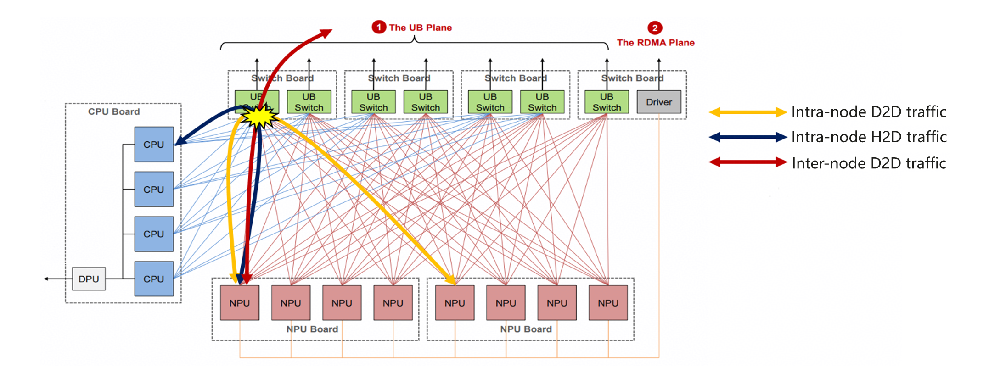
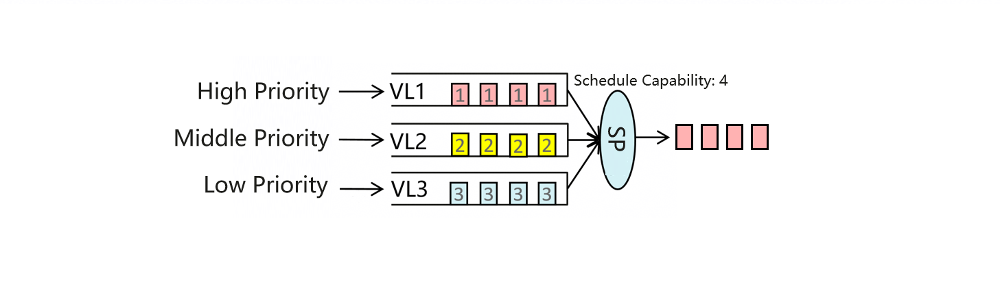

AI QoS Feature
Background
In the inference scenario, there are different types of traffic, such as operator delivery, collective communication, and KVCache. Such traffics are transmitted through network and affect each other, increasing the inference latency.
For example, in the Agentic AI era, as the context length continues to increase, the size of the KVCache also gradually grows. To conserve HBM usage, the approach of offloading KVCache to DDR is adopted to enhance inference TPS. At the same time, to maximize the utilization of computing power, a pipeline orchestration method using computation to mask KVCache is commonly employed. This method involves prefetching the next layer's KVCache during the current layer's computation/communication to reduce overall latency. However, this approach introduces a traffic conflict issue between the KVCache and the operator delivery/collective communication, leading to increased inference latency and impacting the SLO.

As shown in the preceding figure, traffic conflicts occur on the UB switch when intra-node device-to-device (D2D) traffic, intra-node host-to-device (H2D) traffic, and inter-node D2D traffic are transmitted.
Introduction
When different types of traffic conflict with each other, the Virtual Lane (VL) can be used to isolate the traffic at the UB switch and perform differentiated scheduling between the VLs. This helps to: (1) isolate the VLs of different types of traffic to prevent congestion from spreading; (2) perform differentiated scheduling for different types of traffic.
As shown in the following figure, different types of traffic are mapped to different VLs to isolate the traffic. In addition, the priority of each VL is set and the strict priority (SP) scheduling mode is used. When different types of traffic reach the UB switch at the same time, the traffic in the VL with the high priority is scheduled first, and then the traffic in the VL with the middle priority is scheduled. This process repeats until all the traffic is scheduled. In this way, differentiated scheduling is implemented for different types of traffic.

Different traffic is transmitted through different channels. Therefore, the AI QoS solution implements isolation and differentiated scheduling of different traffic to meet service requirements by (1) setting priorities for different NPU channels on the host, (2) establishing the mapping between the NPU channel priority and the VL of the UB switch, and (3) performing differentiated scheduling among different VLs of the UB switch based on the priority.
Build AI QoS Module
Build and install the AI QoS extension before using tools/ai_qos.py.
The DSMI include‑file (dsmi_common_interface.h) and library‑file (libdrvdsmi_host.so) paths are environment-dependent. Locate the paths on your machine first, then replace YOUR_DSMI_INCLUDE_DIR and YOUR_DSMI_LIBRARY_FILE in the command (for example, /usr/local/Ascend/driver/include and /usr/local/Ascend/driver/lib64/driver/libdrvdsmi_host.so).
In most deployments, these commands are executed inside a container. When creating the container, make sure the DSMI header/library directories are mounted into the container filesystem; otherwise CMake cannot find the files.
Run the following commands from the vLLM-Ascend repository root:
cmake -S tools/ai_qos -B tools/ai_qos/build \
-DCMAKE_BUILD_TYPE=Release \
-DCMAKE_INSTALL_PREFIX=${PWD}/vllm_ascend \
-DDSMI_INCLUDE_DIR=YOUR_DSMI_INCLUDE_DIR \
-DDSMI_LIBRARY=YOUR_DSMI_LIBRARY_FILE
cmake --build tools/ai_qos/build -j
cmake --install tools/ai_qos/build
Usage Instruction
The AI QoS feature supports two modes: Auto and Manual. Enter the vLLM-Ascend installation directory and run the following command before running the inference job:
### 1) Auto mode
python tools/ai_qos.py
AI QoS auto mode automatically classifies the priorities of different types of traffic and generates QoS tags. It also prints the UB switch configuration. You can copy the outputs and log in to the UB switch to configure the QoS configurations of UB switch. This configuration will overwrite the current QoS configuration on the UB switch. If there is any existing QoS configuration, please back it up in advance.
### 2) Manual mode
python tools/ai_qos.py --mode manual --AIV_D2D {priority} --AIV_H2D {priority} --SDMA_D2D {priority} --SDMA_H2D {priority} --PCIEDMA_H2D {priority}
AI QoS manual mode calculates the QoS tag of traffic based on the priority of different types of traffic set by users, and generates and prints the UB switch configuration.You can copy the outputs and log in to the UB switch to configure the QoS configurations of UB switch. This configuration will overwrite the current QoS configuration on the UB switch. If there is any existing QoS configuration, please back it up in advance.
In manual mode, you can specify the priority of only one type of traffic. The parameters are described as follows:
Name |
Type |
Default |
Description |
|---|---|---|---|
mode |
str |
auto |
The mode of AI QoS, default mode is "auto", another mode is "manual",some parameters need to be configured if you choose "manual" mode. |
AIV_D2D、AIV_H2D、SDMA_D2D、SDMA_H2D、PCIEDMA_H2D |
str |
AIV_D2D: high, |
Parameters for "manual" mode, determined the QoS priority of different types of traffic. |
How to disable AI QoS:
python tools/ai_qos.py unset
The command for disabling the AI QoS feature on the UB Switch will be printed on the screen. Please log in to the UB Switch and execute the command printed on the screen to complete the feature disabling.
Usage Constraints
Due to underlying driver limitations, the QoS configurations for AIV_H2D and AIV_D2D do not take effect currently. Once the required adaptation capabilities are added in a future driver release, this feature will be delivered through a module upgrade.
The AI QoS feature supports the Atlas 800T A3 server and Atlas 900 A3 SuperPoD cluster. It must be used in privileged containers and requires the following software versions:
Software |
Matched Version |
|---|---|
Ascend HDK |
25.5.2 or later |
UB Switch |
LingQu Computing Network 1.5.1 or later |